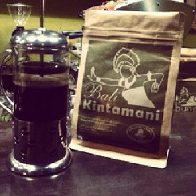

Kopi yang berasal dari daerah Kintamani Bali nan sejuk ini memang memiliki keunikan cita rasa yang berbeda dari kopi di daerah lain di nusantara. Kopi Bali Kintamani memiliki cita rasa buah-buahan yang asam dan segar. Hal tersebut terjadi dikarenakan tanaman kopi di Bali Kintamani ditanam bersamaan dengan tanaman lain seperti aneka sayuran dan buah jeruk. Kopi jenis ini menggunakan sistem ‘tumpang sari’ bersama dengan jenis tanaman lain. Itu kenapa biji kopinya meresap rasa buah-buahan seperti jeruk. Selain memiliki cita rasa ‘buah’, kopi Bali Kintamani memiliki cita rasa yang lembut dan tidak berat. Keunikanya tersebut di dapat dari letak geografisnya yang unik juga. Bagi kamu yang menyukai cita rasa kopi berbeda, kopi Bali Kintamani bisa menjadi pilihan yang tepat.